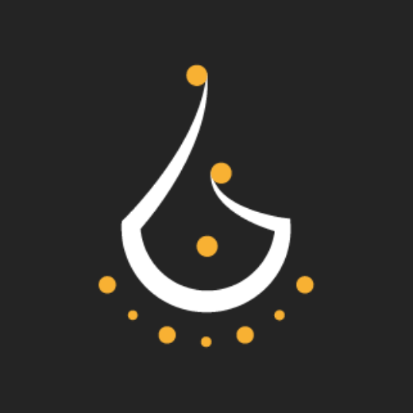

نبراس
يتم تطويره من قبل
عمريو وليد
الموقع الإلكتروني للمطور
www.walidamriou.com
الإصدار
1.0.0
حول المشروع
نبراس، هو دليل موجه إلى طلبة السنة الأولى للشعب التقنية
بالجامعات الجزائرية، يحتوي على أهم المصطلحات والمفردات
إلى يصادفها في البرنامج الدراسي خلال هذه السنة وما بعدها.
يحوي هذا المعجم على أزيد من 2160 مصطلح.
تم تطوير مشروع نبراس في الأساس من قبل العديد من المطورين
طه زروقي، عبد الكريم شريفي، حسام الثغري، وليد زيوش، أبو بكر نور، مهدي عولمي، بلال عتيق
حصلت على رخصة إستخدام قاعدة البيانات، الشعار، الإسم والكود المصدري من قبل الدكتور طه زروقي
موقع المشروع
nibras.walidamriou.com